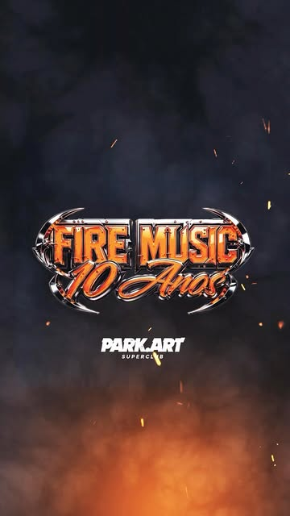
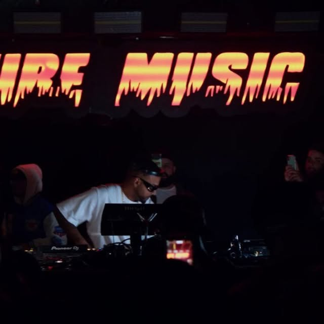
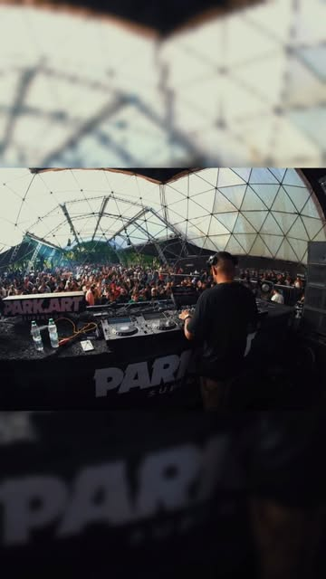

3 out 2026 · realizado
Fire Music 10 anos
Open air no Park Art. A campanha de setembro falava em estrutura inédita e em Plástic Robots & Ricck. Ingresso de referência no Ingresso Nacional.
Agenda
Datas confirmadas em post público e janelas abertas para booking. Casa citada por ele: Park Art SuperClub, em Pinhais, na região metropolitana de Curitiba.



3 out 2026 · realizado
Open air no Park Art. A campanha de setembro falava em estrutura inédita e em Plástic Robots & Ricck. Ingresso de referência no Ingresso Nacional.
9 mai 2026 · set no ar
Noite de chuva e frio. O set está no YouTube e o post de 12 de maio agradece quem ficou.

Super Club · marco de carreira
Reel de 1º de novembro de 2024. Ele aponta o set no YouTube e no SoundCloud e marca a casa e o fotógrafo.
Temporada seguinte
Datas para casa noturna, aniversário de marca, formatura e open air em Curitiba e região. O briefing sai pelo formulário e segue no direct.
Produção
Faixa, identidade de festa e apoio a artista local. Não é uma residência inventada: é o segundo projeto da bio.
Casa de referência
Avenida Iraí, 1700, Weissópolis, Pinhais — PR. No site da casa: música, liberdade e natureza, no ar desde 2012.
Mapa
Abre o OpenStreetMap no endereço público do Park Art. A cidade de morada e de comunicação é Curitiba; o palco mais citado fica na região metropolitana.